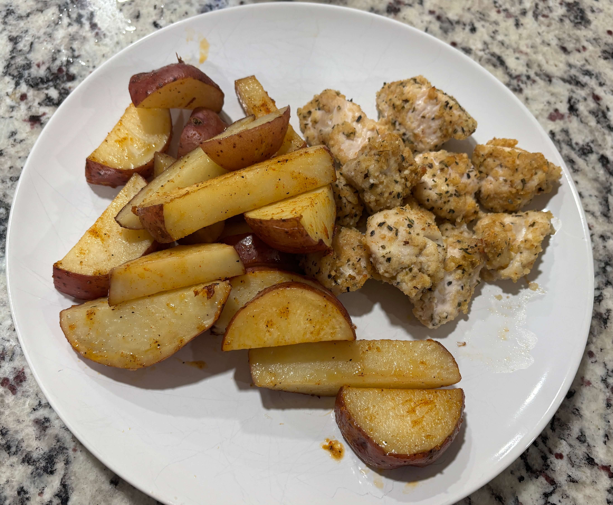

Home
Baked Chicken Nuggets and Potao Wedge

6 servings
Prep: 10 mins, Cook: 30-40 mins
Ingredients
- 3 skinless, boneless chicken breasts
- 1 cup Italian seasoned bread crumbs
- ½ cup grated Parmesan cheese
- 1 tablespoon dried basil
- 1 teaspoon dried thyme
- 1 teaspoon salt
- ½ cup butter, melted
- 2 pounds red potatoes, about 6-8 potatoes
- 2 tablespoons oil
- 1 teaspoon salt
- 1 teaspoon paprika
- 1 teaspoon garlic powder
- ½ teaspoon onion powder
- pinch black pepper
Steps
- Gather all ingredients. Preheat the oven to 400 degrees F
- Cut the potatoes into about 8 wedges (They should be less than 1/2 inch thick on the wide edge, if your potatoes are larger, cut any larger wedges in half again). Pat the potato wedges dry with paper towels to absorb excess starch.
- In a large bowl, combine potato wedges and oil, toss to coat. Stir together salt, paprika, garlic power, onion powder, and pepper. Sprinkle over potato wedges and toss to coat.
- Transfer potato wedges to your prepared baking sheet, arranging them in a single layer so they aren't overlapping, and doing your best to have them not touching. Bake for 15-20 minutes. Prepare chicken while cooking fro first 15 min. Remove from oven, turn over the potato wedges with fork or tongs. Return to oven for 15-20 minutes.
- Cut chicken breasts into 1 1/2-inch pieces.
- Mix the bread crumbs, Parmesan, basil, thyme, and salt together well in a medium bowl. Put melted butter in a bowl or dish for dipping.Dip chicken pieces into the melted butter first, then coat with the bread crumb mixture.
- Place the well-coated chicken nuggets on a lightly greased cookie sheet in a single layer.Bake nuggets in the preheated oven until browned and chicken is cooked through, about 20 minutes.